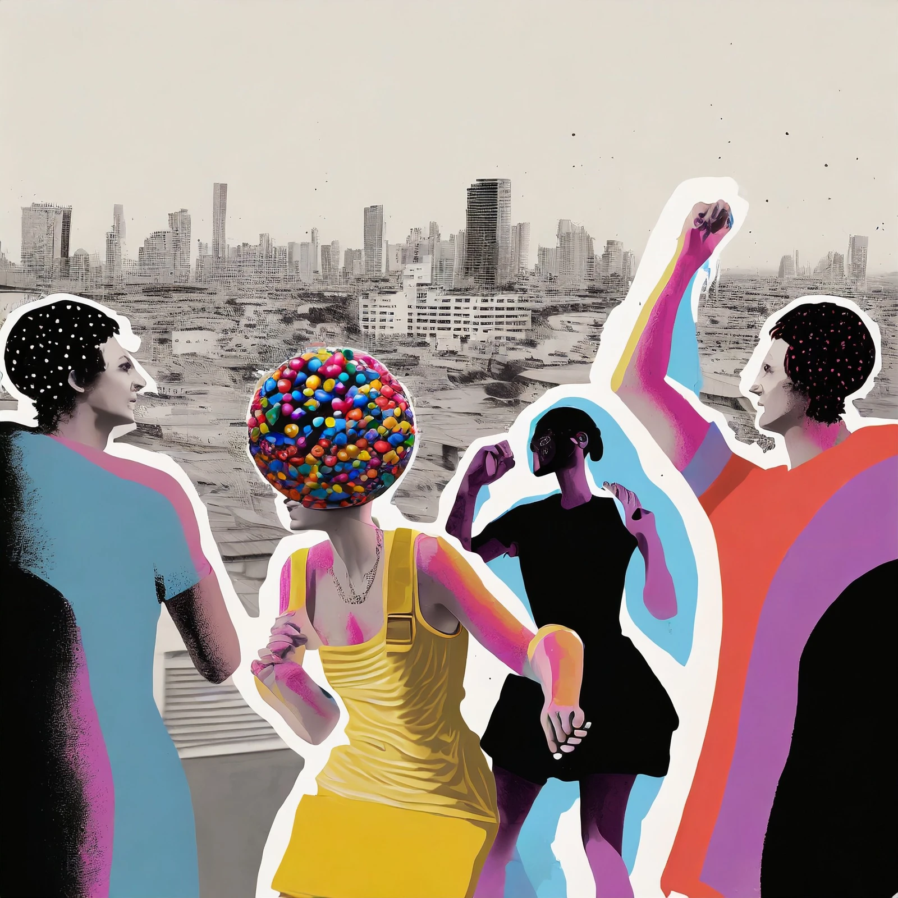

THE THRIFT RACK
Preloved clothes Deon finds because they have something to say. Individual garments, measurements and condition notes will arrive as the shop takes shape.
COMING TO THE SHOP ↗The strange little details stay.
The city gets a new cast.
A second doorway into Deon’s collage world: ball heads, impossible outfits, scuffed city streets, and all the beautiful oddities that make these images hers.
Some works gather a crowd. Some follow one figure. Others let the city speak. Every piece here came from Deon’s selected artwork, with its collage textures and imperfect details left intact.
Pick a street. Follow a color. Get lost for a minute.
In the interactive room, turn the canvas, change the wall, and move over a piece to shift its figures against the city. Whole bodies move together; the source images keep their marks, smudges, and peculiar edges.
DRAG · TILT · MAKE SPACE FOR THE ODDObjects with history. Clothes with another chapter ahead.
Preloved clothes Deon finds because they have something to say. Individual garments, measurements and condition notes will arrive as the shop takes shape.
COMING TO THE SHOP ↗Some finds stay just as they are. Others become upcycled one-offs. Finished pieces and their before-and-after stories will appear here.
COMING TO THE SHOP ↗Curiosities, surprise objects, and the things that refuse a category. Actual finds will be photographed and described when available.
COMING TO THE SHOP ↗
FROM THE FIRST EDITION / ORIGINAL DIGITAL ARTThis is my corner of the world. My art, the clothes I find, the things I bring home because there’s just something about them.
Some pieces stay exactly as I found them. Some get another life. The artwork’s odd little details stay too. They’re part of why I love it.
Deon MonaiExplore the brand studio ↗